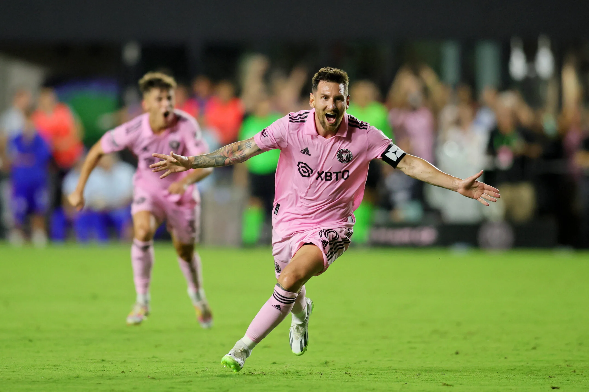
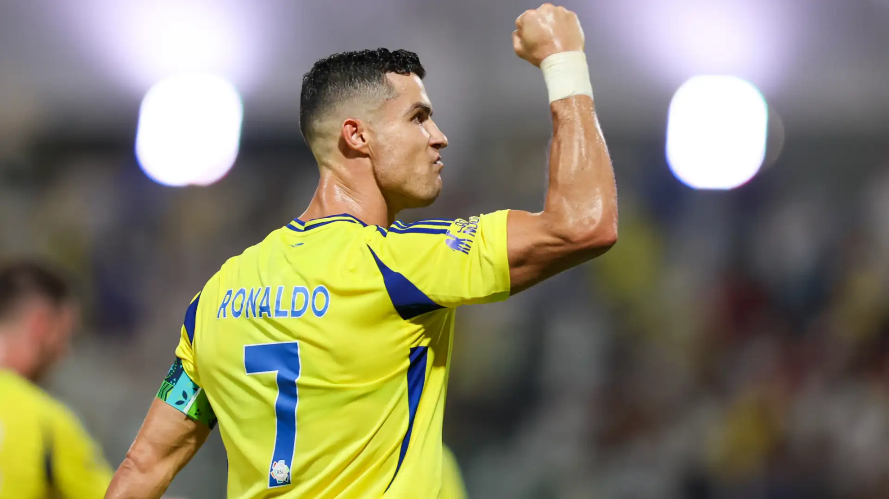

Meet The Titans Of Soccer
Soccer, known as football in most parts of the world, is more than just a game—it's a passion that unites millions. The sport has produced countless legends, each leaving an indelible mark on the field. This website celebrates the best soccer players, both past and present, who have shaped the game and inspired fans globally.
Featured Players
Lionel Messi
Position: Forward
Current Club: Inter Miami
Achievements:
- 7 Ballon d'Or wins
- 1 FIFA World Cup
- Numerous domestic and international titles
Lionel Messi is often regarded as the greatest soccer player of all time. His dribbling skills, vision, and goal-scoring ability have mesmerized fans for over a decade.
Cristiano Ronaldo

Position: Forward
Current Club: Al Nassr
Achievements:
- 5 Ballon d'Or wins
- 1 UEFA European Championship
- Multiple Champions League titles
Cristiano Ronaldo is a physical specimen known for his incredible goal-scoring record and unmatched work ethic. His journey from Sporting Lisbon to global stardom is an inspiration to aspiring athletes everywhere.